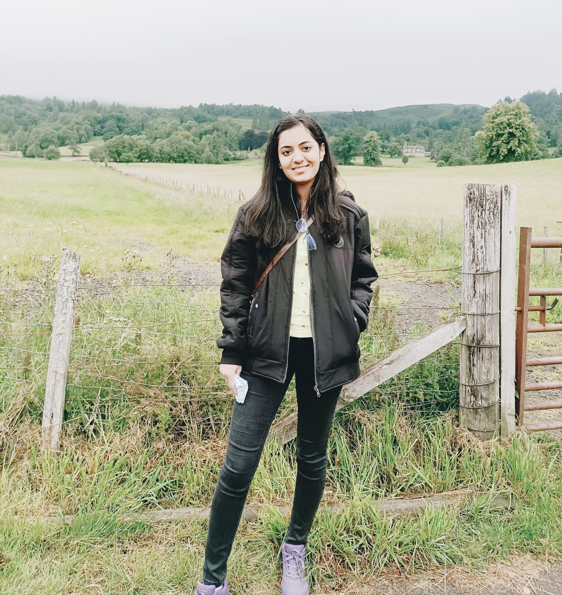
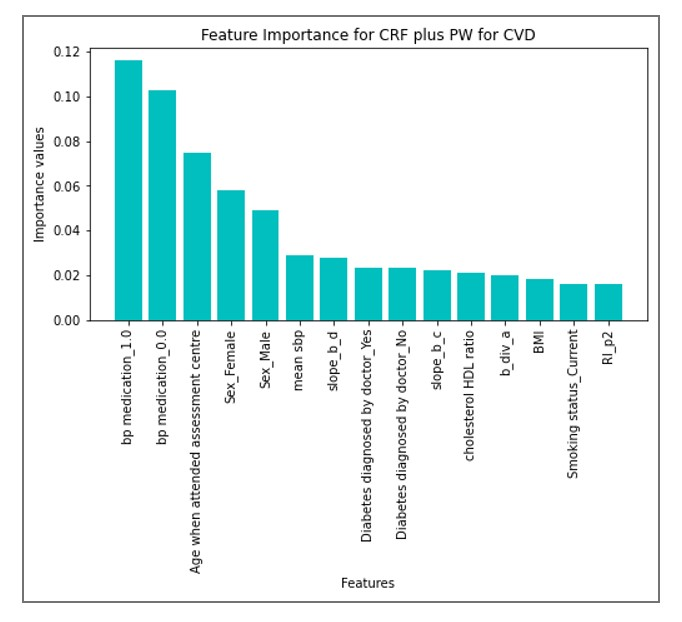

ABOUT ME
With a passionate dedication to computational biology, I bring an interdisciplinary background spanning biology, bioinformatics, machine learning, and statistics. Fueled by an insatiable curiosity, I possess a unique talent for unraveling the intricate mysteries of digital biology. With a dedicated focus, I'm committed to leveraging the powerful integration of biology, machine learning, and bioinformatics to tackle some of the most complex biological puzzles.

EDUCATIONAL BACKGROUND
I hold a Bachelor's degree in Microbiology from Ramnarain Ruia Autonomous College, Mumbai, where I cultivated a strong foundation in biological concepts and fundamentals. Building upon this groundwork, I pursued a Master of Science in Bioinformatics and Applied Biotechnology at the prestigious Institute of Bioinformatics and Applied Biotechnology (IBAB), Bangalore. This interdisciplinary program provided me with a rigorous education in biology, bioinformatics, computer science, and statistics , equipping me with the skills to approach complex problems from multiple angles.
Eager to expand my knowledge and skill set further, I pursued a second Master's degree from King’s College London in Applied Statistical Modelling and Health Informatics. This transformative experience broadened my horizons, exposing me to cutting-edge concepts in machine learning, artificial intelligence, and predictive modeling for healthcare and biological data. Additionally, I delved into emerging fields such as computational neuroscience and natural language processing, further fueling my ambition to innovate and contribute to advancements at the intersection of technology and life sciences.
PROFESSIONAL JOURNEY
My professional journey has taken me to esteemed institutions such as the National Centre for Biological Sciences (NCBS) and the Indian Institute of Technology Gandhinagar (IITGN). At NCBS, I spearheaded the development of a comprehensive computational pipeline for detecting riboswitches (non-coding RNAs) in the coding regions
(CDS) of nucleotide sequences, showcasing my proficiency in computational RNA biology. Subsequently, at IITGN, I led the creation of a machine learning model to distinguish between cancerous and non-cancerous tissue samples using multi-omics data, highlighting my expertise in leveraging advanced technologies for biomedical research.
I recently concluded my tenure at AarogyaAI Innovations Pvt. Ltd., a dynamic health-tech startup, where I orchestrated the fusion of genomics and machine learning to tackle antimicrobial drug resistance. Thriving in a collaborative, multi-disciplinary setting, I navigated the complexities of healthcare innovation with enthusiasm and expertise.
Let's dive into my exciting work

Backed by robust data from 100K+ participants from the UK Biobank, this research unveils the transformative potential of pulse wave analysis and classical risk factors in forecasting both cardiovascular disease and cardiovascular disease death risks. Leveraging state-of-the-art machine learning techniques, the study aims to predict the risk of cardiovascular diseases, empowering the individual to take proactive steps towards effective treatment options.
Aim of this study is to classify the presence of cold and flu in speech samples using baseline models and deep learning. The study also delves into a comparative analysis of these models used for classification.
Development of a machine learning model for cancer classification using multi-omics data (mRNA, miRNA and methylation data). The project focused on creating a model to differentiate between cancerous and non-cancerous tissue samples, aiding clinicians during surgery for effective removal.
Enhancement of host pathogen protein - protein interaction network using recommender systems (probabilistic spreading algorithm) and machine learning.
Development of a machine learning model for cancer classification using multi-omics data (mRNA, miRNA and methylation data). The project focused on creating a model to differentiate between cancerous and non-cancerous tissue samples, aiding clinicians during surgery for effective removal.
Aim of this project was to develop a machine learning model to predict sepsis diagnosis using vital signs, laboratory tests and demographic variables. Sepsis is body’s response to an infection which leads to tissue damage. If sepsis is detected well in advance, it can save many lives. This project explores the prediction of Sepsis using ML classifier based on physiological data.
Implemented the published model of Pancreatic Beta Cell G - Protein Coupled Receptors and Second Messenger Interactions: A Systems Biology Computational Analysis on MATLAB. We developed a mathematical model of the insulin secreting pancreatic beta cell environment which includes membrane mechanisms, G protein coupled receptor mechanisms, cAMP and PLC pathway and cytosolic and endoplasmic reticulum calcium dynamics The model was based on ordinary differential equations with nonlinear terms which were numerically integrated by Eulers method.